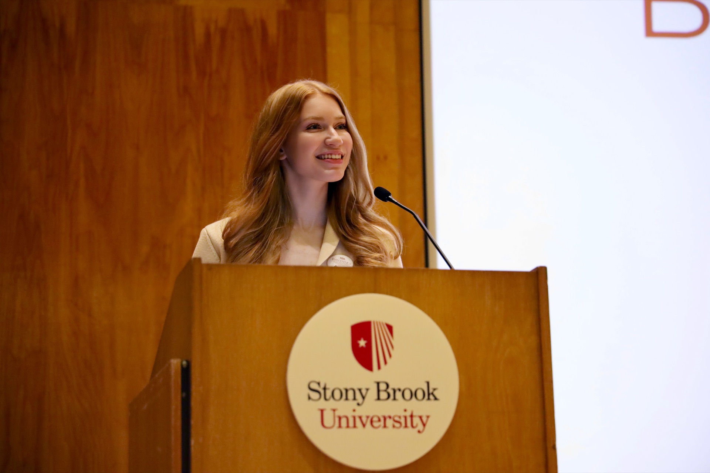
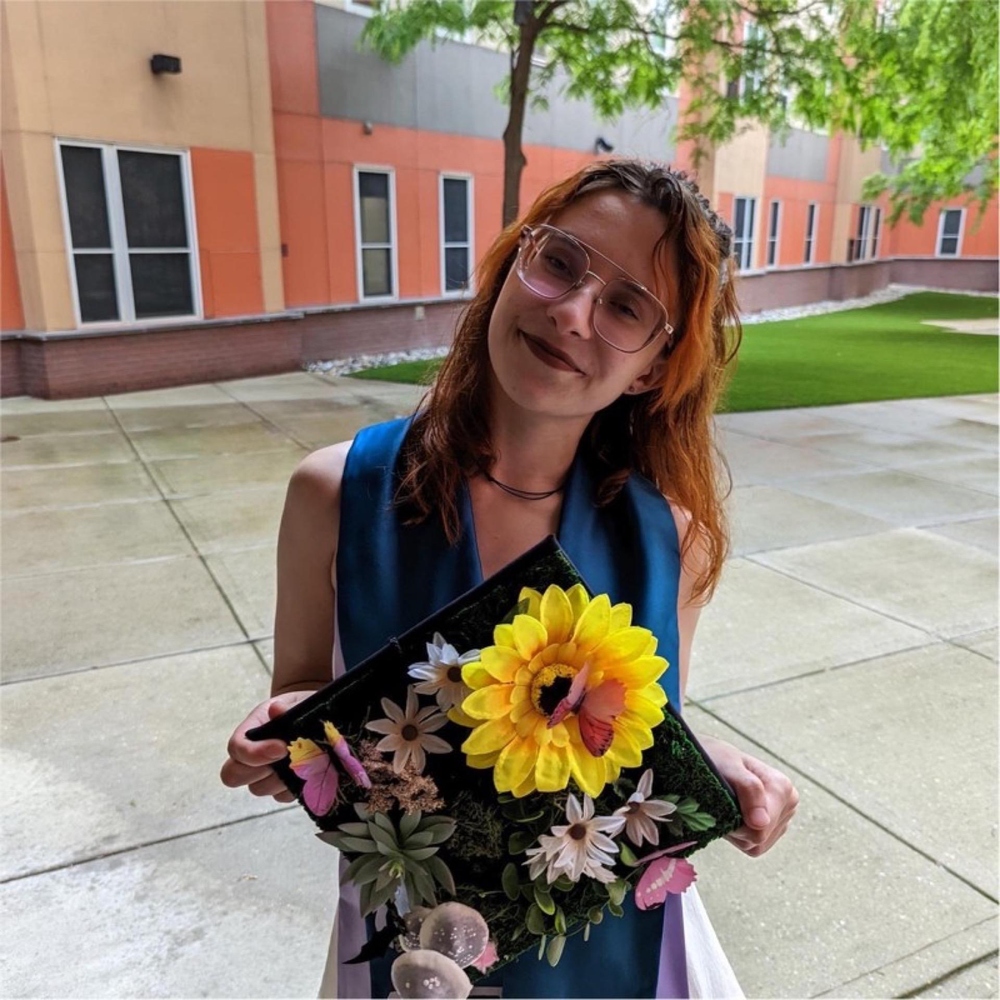
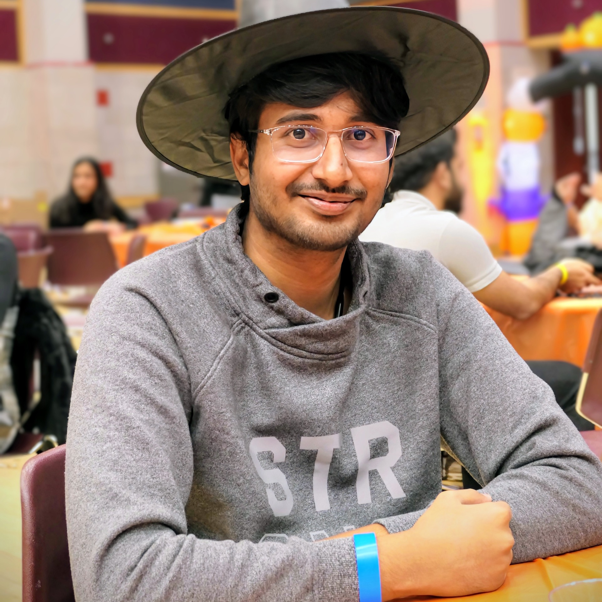
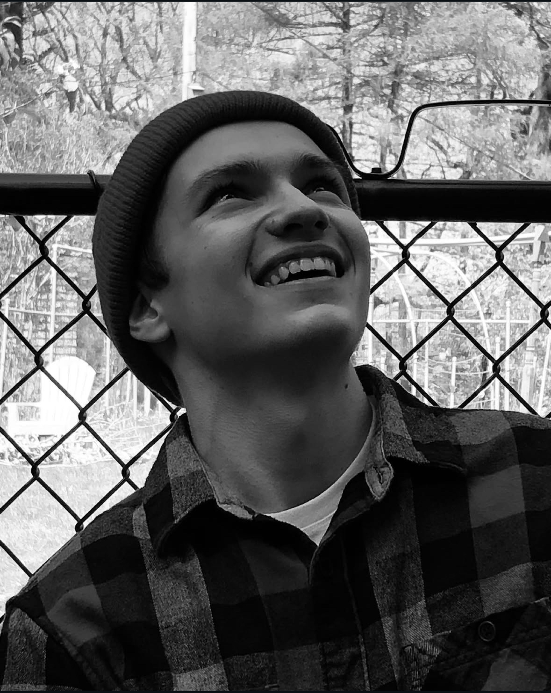
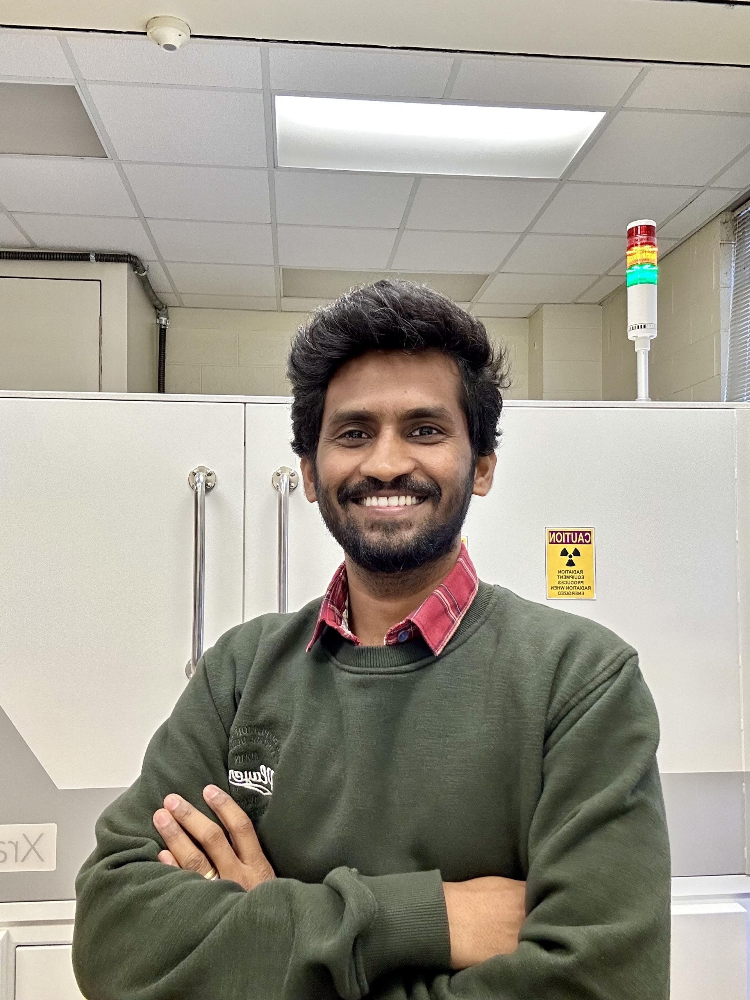
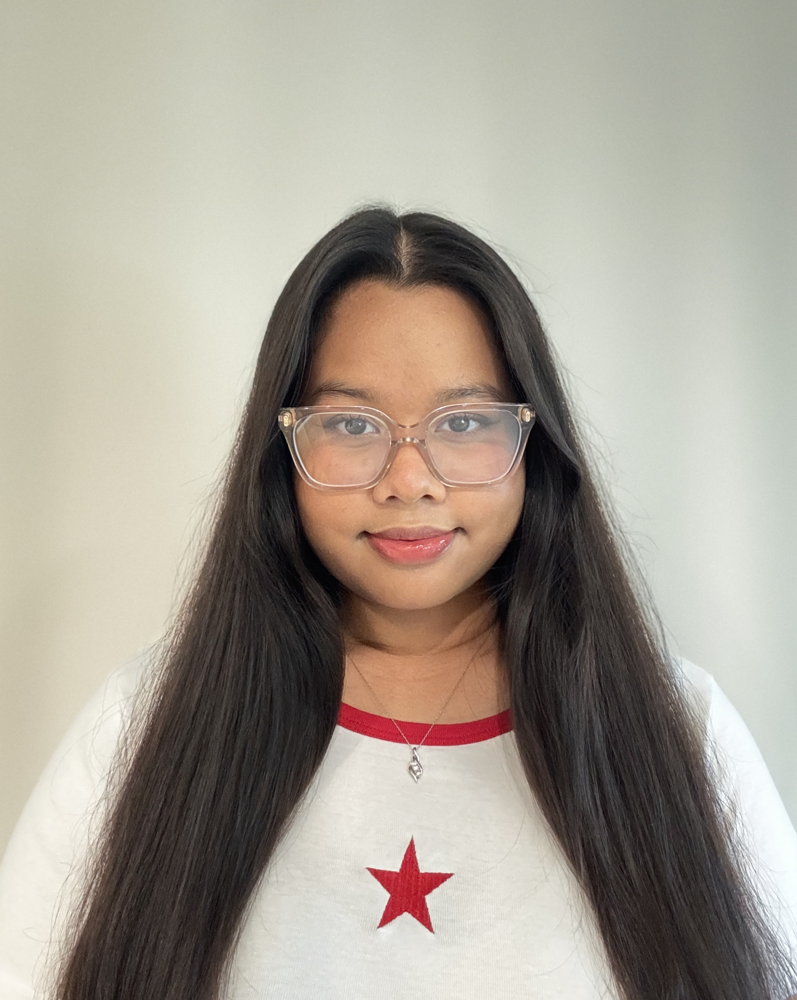
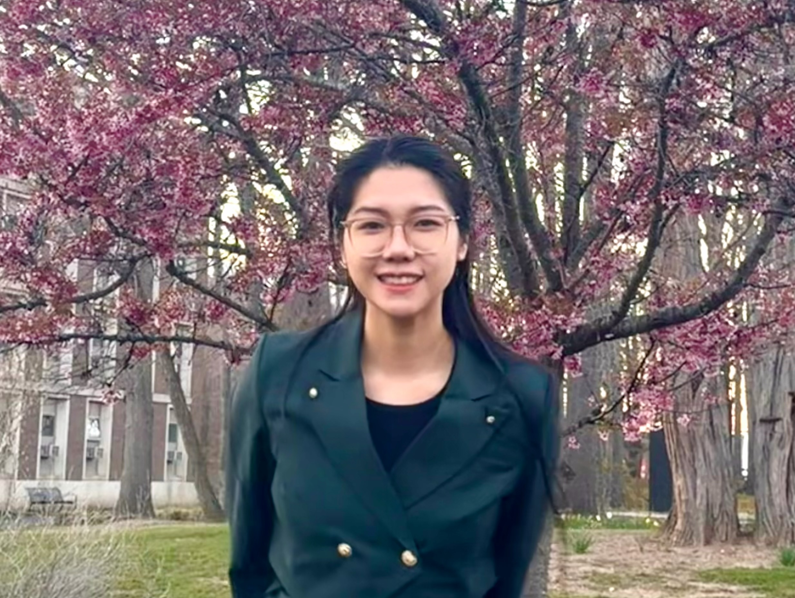
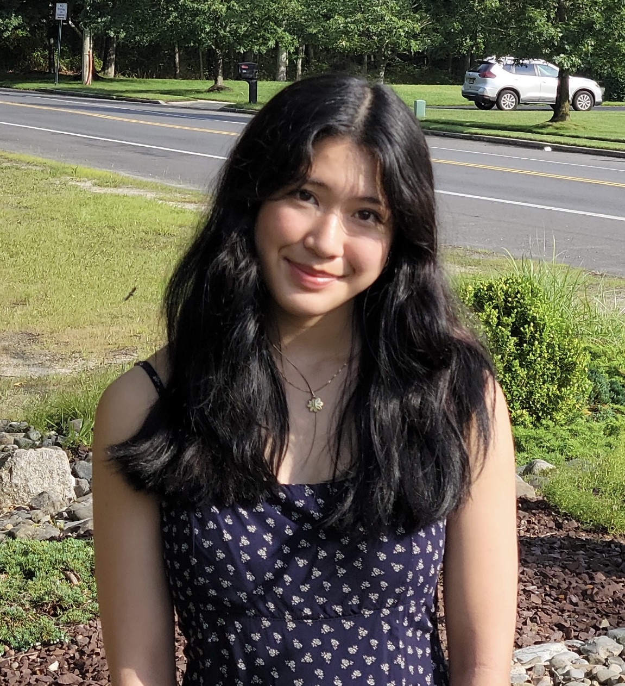
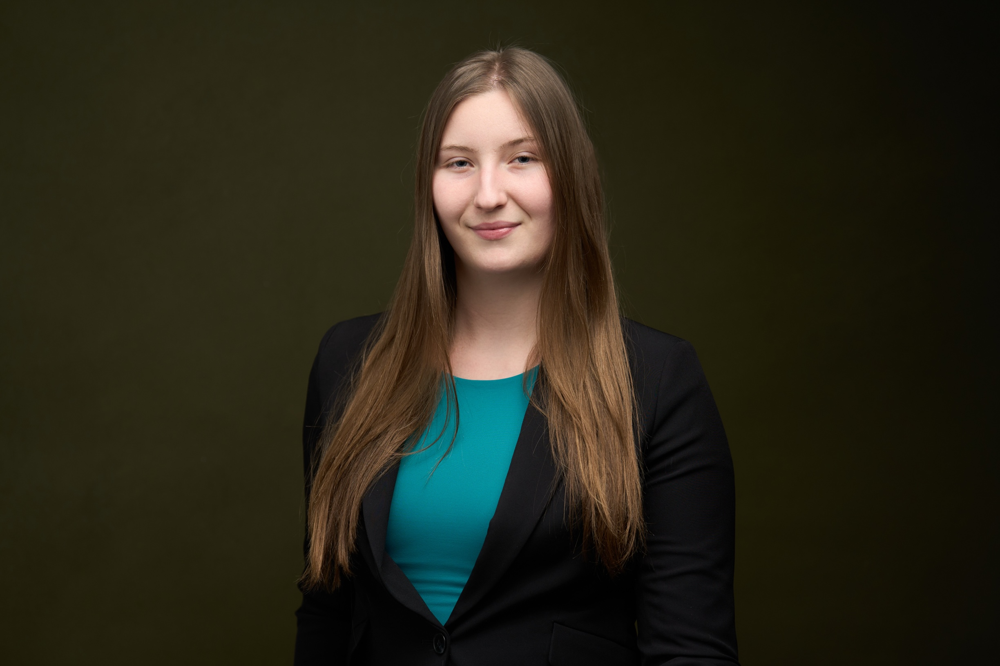
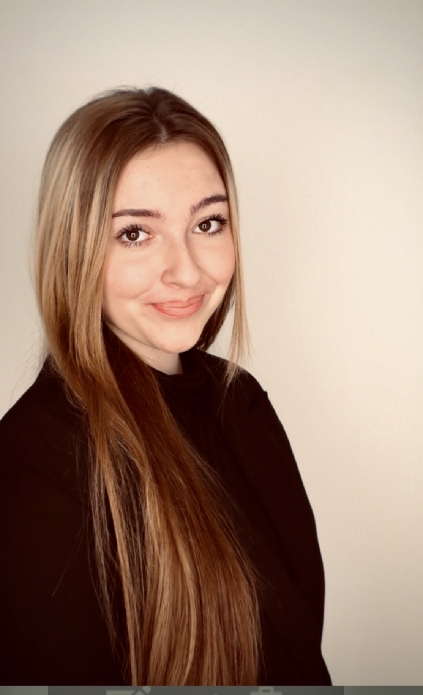

Executive Board and undergraduate contributors behind the SBU Graduate Arts & Sciences Magazine
Executive Board

Ava Nederlander
Founder, President & Executive Editor
Ava is a PhD Candidate in Electrical and Computer Engineering, working under Dr. Arie Kaufman in the Center for Visual Computing. Her research interests are interdisciplinary, focusing on the intersection of machine learning and augmented reality/virtual reality with medical oncologic surgeries.

Rachel Deahl Kostelnik
Vice President of Publication and Media
Rachel is a PhD student in Marine Atmospheric and Sustainability Sciences, working in the Warren Lab, researching the interaction between internal waves in shallow systems and pycnocline stability. She is from New Jersey, where she completed her undergraduate and master's degrees at NJIT in Ecology & Evolution, looking into the potential for automated insect classification using infrared remote sensing. During her free time, she loves to write, paint, and spoil her cats. In the future, she’d love to have a career where she’s able to communicate science to the public and policy-makers and teach college students to become interested in the sciences.
Narmin Mekawy
Vice President of Administration
Narmin is a PhD candidate in Neurobiology and Behavior working in the Dubnau lab. She is studying how stress influences the onset and progression of neurodegenerative diseases. She is a first generation Egyptian-Moroccan woman from Staten Island, New York. In her free time she likes to organize with community groups, sing and bake. Long-term goals include starting a research lab at an academic institution while contributing to the community and advancements to education and science.

Yashwanth Pateel
Secretary
Yashwanth is a Masters student in Electrical Engineering, specializing in Signal Processing and Communications. He spends his downtime traveling, swimming, and following the fast-paced action of F1 and MotoGP. As an aspiring entrepreneur with a passion for innovation, he aims to combine his technical expertise with his entrepreneurial spirit to shape the future of technology.

Dennis Jourdain
HR Manager/Director
Dennis is a Masters student in Human Resource Management. He initially completed his undergraduate degree at the University of Buffalo, where he got his bachelor’s in anthropology, before taking a gap year and switching career paths to Human Resources. In his free time he enjoys playing and watching soccer, reading, and spending time with friends. As he completes his studies, he intends to join the HR field for hands-on experience and views GradMag as a great organization to help develop and refine related skills.

Akhil Kolanti
Treasurer
Akhil is a PhD candidate in Materials Science, working under Prof. Sprouster in the EMX Lab. His research focuses on developing innovative approaches to recycle
and repurpose nuclear waste, with a prime emphasis on nuclear graphite, and designing safe
repositories for long-term nuclear waste storage. Originally from India, he completed his
bachelor’s at Rajiv Gandhi University of Knowledge Technologies (RGUKT)-Nuzvid, and
master’s degree at IIT-Kharagpur and is the first in his family to pursue a PhD. Outside the lab,
he enjoys photography, watching movies, listening to music and playing volleyball. After
graduation, he hopes to pursue a career in industry as a research scientist, contributing to
solutions for sustainable nuclear energy.

Sharmin Alam
Art Director
Sharmin is an undergraduate student pursuing a degree in Biochemistry. She works as an UGTA for Organic Chemistry Lab I and is passionate about studying the chemistry behind biomolecules. In her free time she enjoys working as a freelance artist, spending time with friends, reading, and traveling. She hopes to pursue an MD-PhD program following her post-baccalaureate, furthering her studies.
Esther Nosazeogie
Radio Director
Esther is a Ph.D. student in the School of Marine and Atmospheric Sciences, studying the movement ecology of great black-backed gulls in the Thorne Lab, towards understanding their risk from offshore wind farms in the Northeast US. Outside research, Esther enjoys reading, writing, and listening to real or made-up stories, especially those that highlight how exciting science and nature are.
THR 298: Student Media Leadership
Undergraduates earning credit through THR 298 while contributing to GradMag.

Yazhi (Esther) Wang
Editorial Team
Yazhi (Esther) is an undergraduate student studying Mathematics at Stony Brook University, with a minor in Music and Technology. She is also involved with Stony Brook’s Division of Information Technology (DoIT) and the Blockchain Business Lab (BBL), where she contributes to technology, communication, and interdisciplinary projects. Her interests lie at the intersection of technology, education, and creative communication, and she enjoys finding ways to connect people and ideas across disciplines. Through GradMag, she hopes to help share the work and stories of the Stony Brook community with a broader audience.

Ana Lau
Design & Creative Team
Ana is an undergraduate student working towards a Bachelor of Science in Biology, as well as a Studio Art minor. She hopes to pursue a path in dentistry following her Bachelor’s degree, with a focus on reconstructive work. In her free time, she enjoys painting, sculpting, making tea, and watching movies. As someone who enjoys being hands-on, she aspires to use her artistic skills to make a difference in healthcare.

Alexandra Hanley
Assistant Treasurer
Alexandra Hanley is a third-year undergraduate student at Stony Brook University pursuing a Bachelor of Science in Business Management, with specializations in Finance and AI for Business Innovation and a minor in Communication and Innovation. She serves as Assistant Treasurer for GradMag and is passionate about philanthropy and empowering women in business. On campus, Alexandra is co-founder of Beyond Diabetes at Stony Brook University, a student-led organization that supports those affected by diabetes and educates others about the condition. She also serves as Professional Activities Chair for Women in Business, where she plans professional events and guest speaker sessions.

Dahlia Clark
Outreach/Communication & Editorial
Dahlia is an assistant editorial research and outreach assistant for GradMag. She is a junior pursuing a major in English and a minor in history. In her free time, she loves to shop, write, travel to new places, and especially loves reading with her book club. After graduating from Stony Brook, Dahlia plans on applying to law school. She would like to pursue a career practicing intellectual property while exploring the opportunities the legal field has to offer.